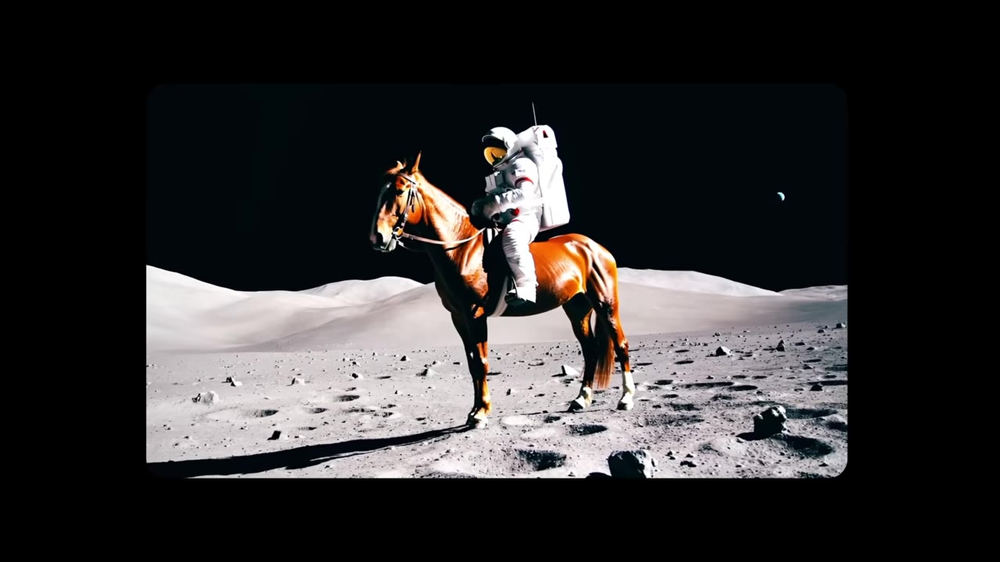
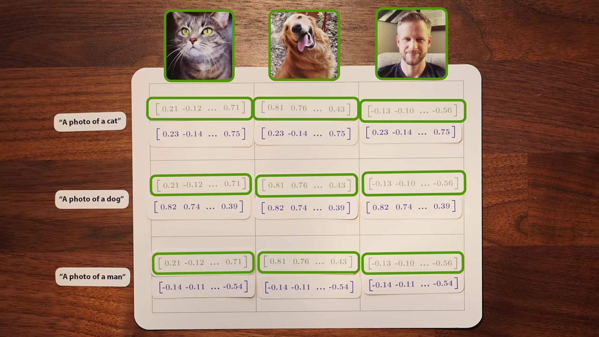
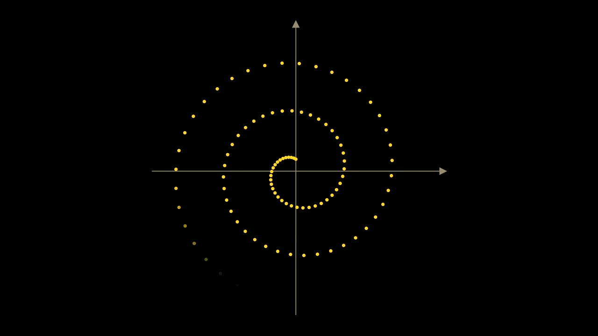
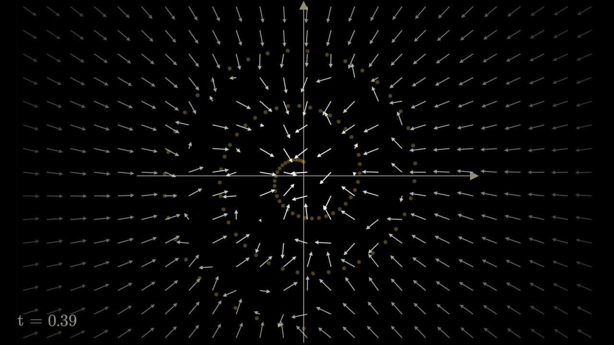
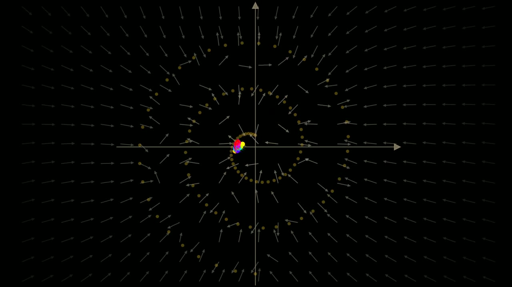
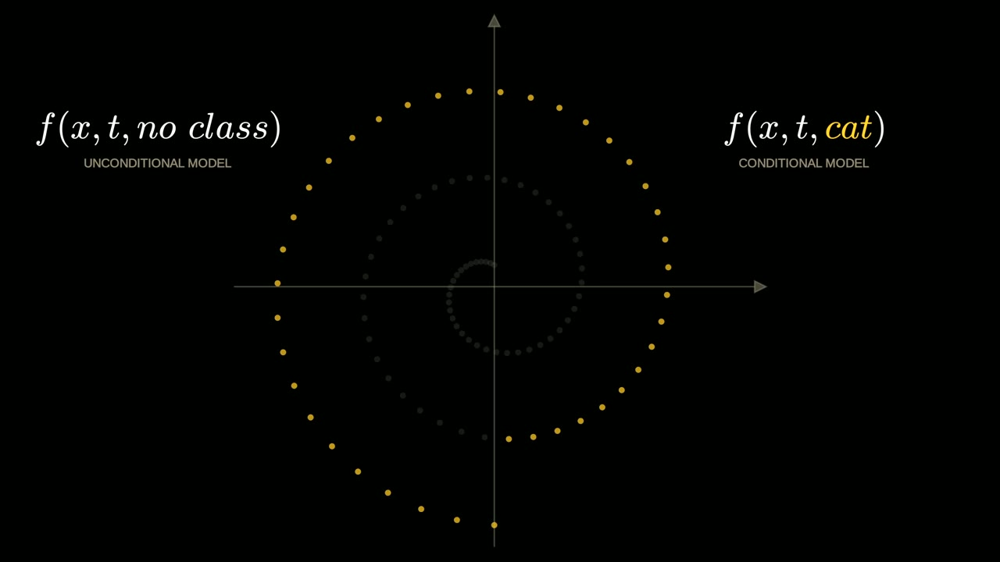
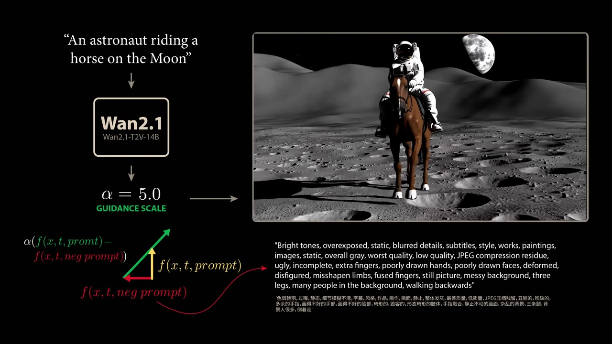

Diffusion models turn pure noise into video by learning to play Brownian motion backwards — then steer that process with text through vector arithmetic in a shared embedding space.
Watch on YouTubeAI image and video models operate through a process called diffusion — remarkably equivalent to Brownian motion (particles diffusing through a medium), but with time run backwards and in high-dimensional pixel space.

The process starts with a random number generator filling every pixel with noise. A transformer — the same architecture behind LLMs — reads that noise video, outputs a slightly less noisy one, and the cycle repeats. Step by step, the transformer carves realistic video out of static.
The best models are closed source, but there are some compelling open source models.— Stephen Welsh
In 2021, OpenAI released CLIP — two models (text encoder + image encoder) trained on 400M image-caption pairs to map both words and pictures into a shared 512-dimensional vector space.

The training objective is contrastive: maximize similarity between matching pairs on the diagonal while minimizing similarity between all off-diagonal (mismatched) pairs. Cosine similarity measures the angle between vectors — zero angle means maximum alignment.
The embedding geometry supports vector arithmetic on pure concepts:
Testing the difference vector against hundreds of words, the top cosine-similarity match is "hat" (0.165), followed by "cap" and "helmet." CLIP's learned space lets you operate mathematically on the ideas inside images — translating content differences into literal vector distances.
A few weeks after GPT-3, a Berkeley team published DDPM (Denoising Diffusion Probabilistic Models), showing high-quality images could be generated by transforming pure noise step by step.

Two surprising details from the DDPM paper:
The key intuition: think of each image as a point in high-dimensional space. Diffusion adds noise → the point goes on a random walk (Brownian motion). Training the model to reverse this means learning a time-varying vector field — a "score function" that points from every noisy location back toward the data manifold.

This phase transition — arrows pivoting from center-attraction to manifold-following — is what lets the model recover fine structure as diffusion time approaches zero.
DDPM required hundreds of steps, each needing a full network pass. Months later, papers from Stanford and Google showed deterministic sampling is possible.

The DDPM generation process is a stochastic differential equation (SDE) — the model's vector field plus random noise terms. Using the Fokker-Planck equation from statistical mechanics, the authors found an ordinary differential equation (ODE) with no random component that produces the same final distribution.
The result: DDIM — deterministic image generation in far fewer steps, with no training changes. Smaller step sizes let trajectories follow vector field contours instead of collapsing to the dataset mean.
The WAN model demonstrated at the start uses a DDIM generalization called flow matching.
CLIP maps text and images into the same space; diffusion models reverse the image encoder. Combining them means using CLIP's text embedding to steer diffusion toward prompt-desired content.
Conditioning alone (passing the text vector as network input) isn't enough — a stable diffusion model prompted with "tree in desert" produces a desert shadow with no tree.
The missing piece is classifier-free guidance:

Train one model with class information randomly dropped during training. At generation time:
This amplified direction pushes points precisely toward the prompt's desired region of the data manifold. At guidance scale α ≈ 2, a tiny tree appears in the desert image and grows with α.
WAN takes classifier-free guidance one step further: instead of an unconditional model, it uses a negative prompt — a text description of everything the user doesn't want.

WAN's standard negative prompt is in Chinese and lists features like "extra fingers" and "walking backwards." Without it, generated scenes go cartoonish — limbs don't connect, objects float — because the diffusion process lacks the counter-force to reject the prompt's blind spots.
To create incredibly lifelike and beautiful images and video, you no longer need a camera. You don't need to know how to draw or how to paint. All you need is language.— Stephen Welsh